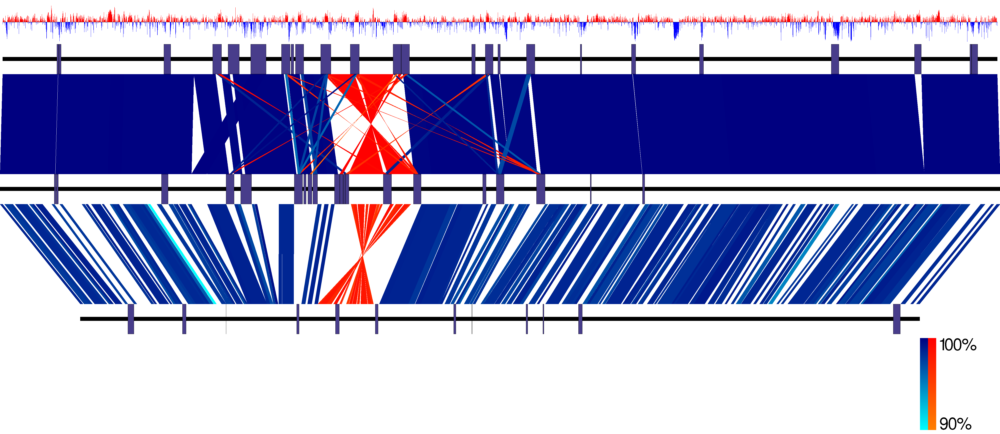

EasyFig
EasyFig is a Python application for creating linear comparison figures of multiple genomic loci with an easy-to-use graphical user interface (GUI).
EasyFig was developed at the Beatson Microbial Genomics Lab.

Comparison of three E. coli with GC content of top genome plotted.
For installation instructions, manual, example files and binaries go to Downloads.
For examples on how to use Easyfig Tutorials.
If you have used EasyFig in your analysis please cite our paper. Pubmed link.
If you have any problems with EasyFig or and feature suggestions post here.
I will endeavour to get back to you as soon as possible.
Email: mjsull@gmail.com
Follow @mjsull1
Updates
-
Website created.
© Mitchell J Sullivan
Design by TEMPLATED.